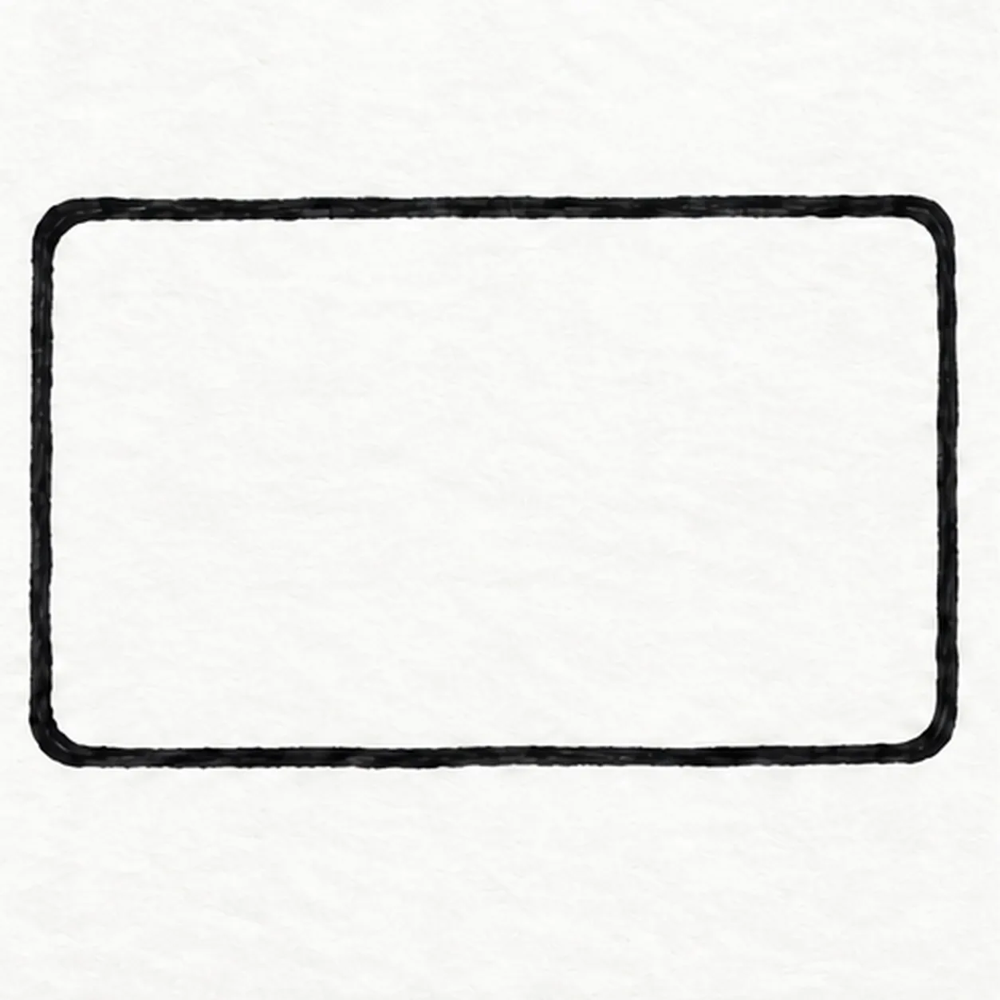
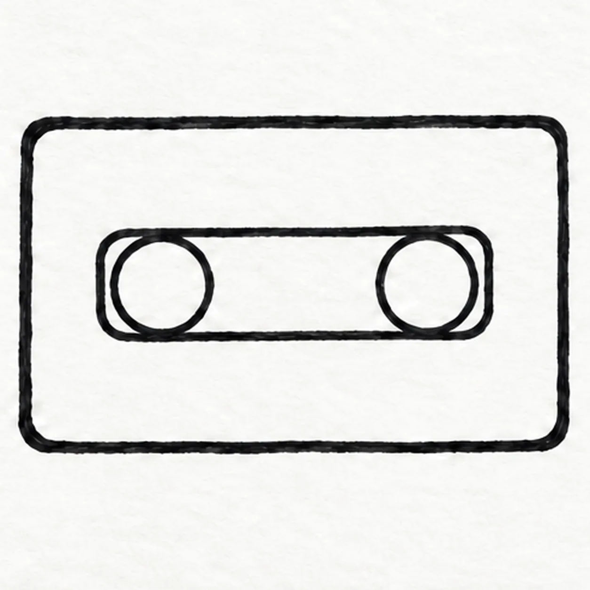
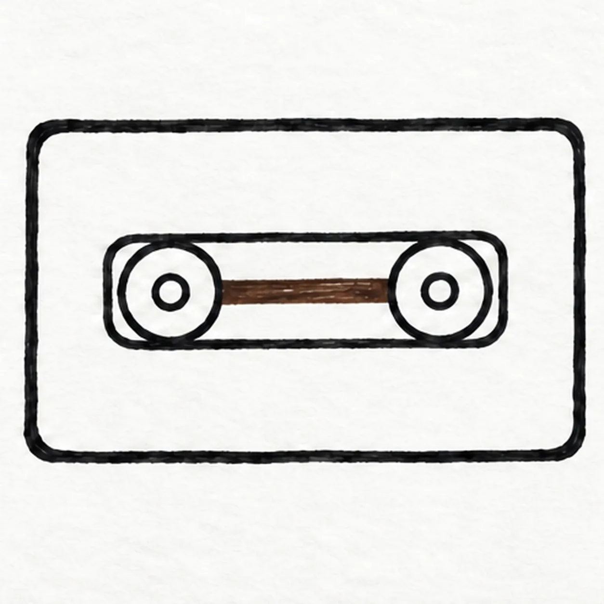
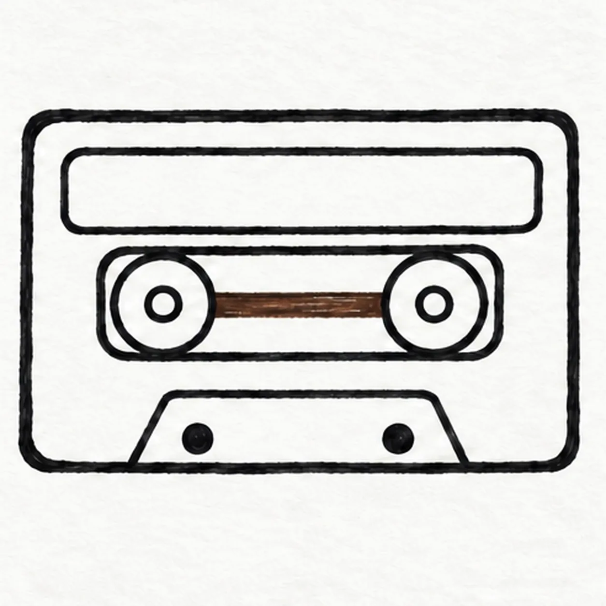
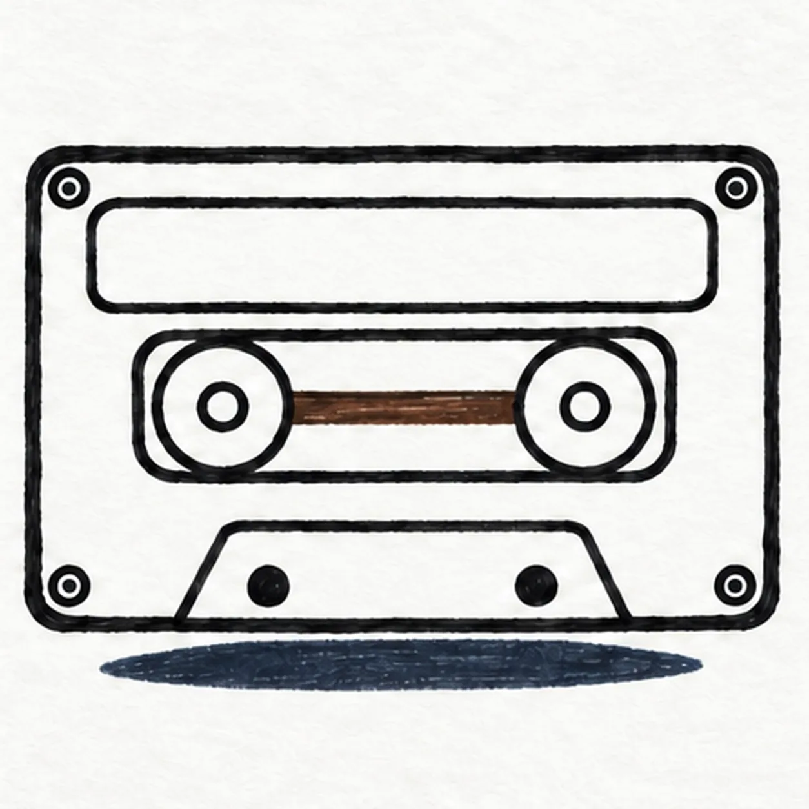

Felt-tip marker mode
Let's draw a cassette tape
Treat this as one playful practice round: sketch the idea loosely, simplify the shapes, then commit with confident marker outlines and bright fills.
-
01

Outline the cassette
Draw one wide rounded rectangle, keeping the top and bottom almost parallel and leaving a broad empty center.
Marker tip: Ghost the long top and bottom edges before inking and keep both short side corners equally rounded.
-
02

Set the window and reels
Inside the shell, draw one long rounded window. Place two equal reel circles, one on each side of its center, with matching margins.
Marker tip: Compare the open gaps at both ends of the window so the two reel circles feel balanced.
-
03

Connect the tape
Put one smaller hub circle inside each reel and draw one narrow tape line across the center of the window between them.
Marker tip: Touch the marker lightly around both tiny hubs, then run the brown strip only between the reels.
-
04

Add the label and holes
Draw one blank label panel above the window. Along the lower shell edge, outline one shallow trapezoid access panel and place exactly two dark circular holes inside it.
Marker tip: Keep the top label blank and count exactly two holes inside the shallow lower panel.
-
05

Finish the hardware
Add one tiny screw circle near each of the four shell corners, then a short flat oval shadow below the cassette.
Marker tip: Keep all four screw circles inside the shell corners and leave a clear paper gap above the shadow.
-
06
Color the cassette
Fill the existing shell coral and teal, the blank label golden yellow, and the tape path warm brown. Deepen the black outlines and navy shadow without adding new hardware or marks.
Marker tip: Let the black felt tip dry before filling broad regions with short uneven marker strokes.